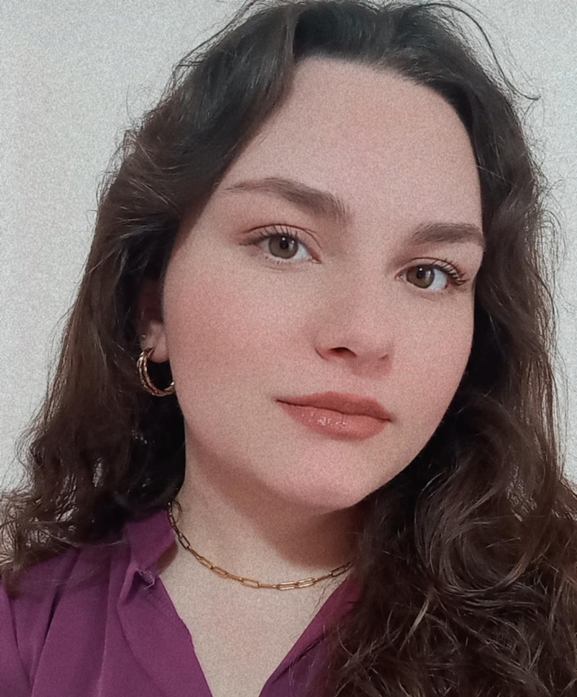

Amalia Koureli
Web Developer

Summary
Entry-level front-end developer με εμπειρία στην αναπτυξη μικρών έργων
και έμφαση στη δημιουργία ιστοτόπων, με φιλικών, προς το χρήστη, διεπαφών,
τη συγγραφή κώδικα, και την επίλυση προβλημάτων. Επιπλέον, δημιουργική
διάθεση, θέληση για απόκτηση νέων γνώσεων, προσαρμοστικότητα,
ομαδικότητα και συνεργασία είναι δεξιότητες που αποκτήθηκαν κατά την
εκπόνηση ομαδικών εργασιών και πρακτικών ασκήσεων.
Education
Πτυχίο Πληροφορικής, Δημοκρίτειο Πανεπιστήμιο Θράκης, Καβάλα (2020-2025)
Hard Skills
- HTML
- CSS
- JavaScript
- React
- Angular
- JQuery
- Rython
- SQL
- UX/UI: Σχεδιασμός Wireframes, Mockups
- Δοκιμή και εξσφαλμάτωση κώδικα
- Version Control Git, Github
- SEO: δημιουργία APIs
Soft Skills
- Επίλυση προβλημάτων και κριτική σκέψη
- Προσοχή στη λεπτομέρεια και ακρίβεια
- Διαχείριση χρόνου και ιεράρχηση προτεραιοτήτων
- Προσαρμοστικότητα και ευελιξία
- Επικοινωνία και διαπροσωπικές δεξιότητες
- Ομαδική εργασία και συνεργασία
- Δημιουργικότητα και καινοτομία
- Μαθησιακή ευελιξία και συνεχής βελτίωση
Ather Languages
Αγγλικά: Άριστα
Proficiency: NOCN (2023)
Lower: Michigan, TOEIC (2017)
Interests
- Artificial Intelligence
- Computer Graphics (Adobe Illustrator, Blender, Figma, Canva)
- Machine Learning
Other
Contact Info